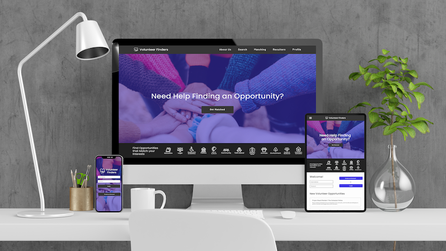

Volunteer Finders
a responsive website and mobile app for finding volunteer opportunities

Challenge: It can be difficult to find volunteer opportunities that are in your area, match your interests, and work with your schedule.
Solution: Volunteer Finders helps fix that problem by asking you a series of questions and matching you with available volunteer opportunities in your area.

When you create a new account you're asked some questions to help you find volunteer opportunities in your area that would be a good match.
If you ever want to change your answers you can go to the home screen and click edit.
Browse a list of volunteer opportunities that have been chosen as a good match.
When you find one you like you can save it.
You can also send the initial email contacting the organization directly from the app.
Personas
While performing user research I learned about the unique needs that each of my users might have when they’re looking for a volunteer opportunity. For example, if an older person is looking for a volunteer opportunity they might be concerned about how far it is and how much physical activity they’ll need to do, where as a younger adult with a busier schedule might be more concerned about how much time the opportunity takes.
Crazy 8s Ideating
Flow Chart

Sketches
Wireframes
Usability Testing
5 participants
23 to 65 years old
USA, unmoderated remote
I got pretty good feedback from user testing, but it was clear I needed to make some signifcant design changes before moving on in the process. A lot of my testers were getting stuck after they got through the onboarding process, it wasn't really clear how to navigate the app once they got to the matching page. I decided to add a home screen to my design to help with user flow, initially I didn't think it was going to be necessary but I ended up combining my original concept for a profile page with buttons to assist with navigation to create a home screen.
Mockups
High Fidelity Prototype
Sitemap
Website Wireframes
Website Mockups
Mobile
Tablet
Desktop
Sticker Sheet
Next Steps
I want to add more mockups to the responsive website and create high fidelity prototypes for mobile, tablet, and desktop.
Sources
Icons - Noun Project
Person Icon - Blush
Images - Unsplash